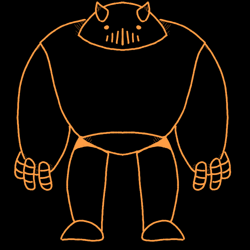

Meet the inhabitants of this story

Ivan's BodyguardNobody knows their name, but many refer to it as 'DOG' due to it always following Ivan's orders. |
IvanThe Prime Minister of Yóó Dinétah (formally New Mexico). He won the election after the current president stepped down from the PM position post the US Retaliation War. |